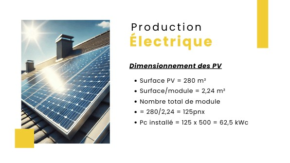
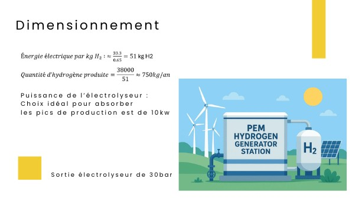
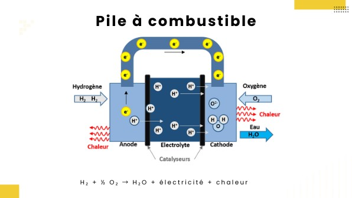

Ce que consomme le bâtiment
Avec 15 kWh/m²/an pour 1 000 m², les usages électriques représentent 15 000 kWh/an. Le photovoltaïque en couvre 60 % en autoconsommation directe ; avec la mise en place d'horloges sur certains usages, l'autoconsommation monte à 12 000 kWh/an et il ne reste que 3 000 kWh/an à couvrir autrement.
Le champ photovoltaïque
Une fois les besoins couverts, environ 38 MWh/an restent disponibles pour produire de l'hydrogène.


Un électrolyseur PEM de 10 kW
L'électrolyseur à membrane (PEM) a été retenu pour son rendement, la pureté de l'hydrogène produit (jusqu'à 99,99 %), sa réponse rapide aux variations de production solaire et sa compacité. Une puissance de 10 kW permet d'absorber les pics de production ; il sort l'hydrogène à 30 bar.
Passer la nuit sur l'hydrogène
La pile à combustible restitue l'électricité (H₂ + ½ O₂ → H₂O + électricité + chaleur). Pour couvrir une nuit, soit 12 kWh électriques avec un rendement de 50 %, il faut environ 0,72 kg d'hydrogène, ce qui demande près de 37 kWh d'électricité solaire par jour. Un réservoir de 2 kg à 350 bar donne 2 à 3 nuits d'autonomie.
La chaleur dégagée par la pile est valorisée pour préchauffer l'eau chaude sanitaire et le chauffage.
